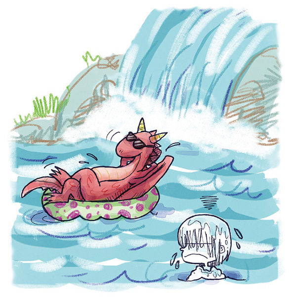

Suspirou, bufou e, em vez de atacar piratas,
foi nadar nas cataratas.

Descrição de imagem: Em um lago com cachoeira ao fundo, o dragão descansa usando óculos escuros e deitado em uma boia verde com bolinhas roxas. Thomas está na água com os cabelos molhados e expressão triste. Fim da descrição.